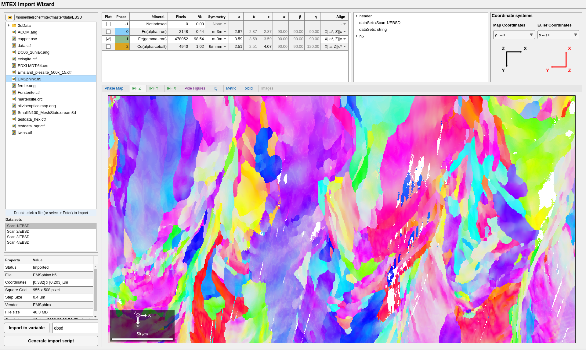

You need MATLAB R2022b or newer. No further toolboxes are needed; only the GND and Taylor computations use the Optimization Toolbox. Most of MTEX also runs in releases back to 2016b, but the import wizard needs R2022b and reading HDF5 files R2019b.
1. Install MTEX
- Download mtex-7.1.0.zip
and unzip it into a folder that stays where it is, for instance
Documents/MATLAB/mtex-7.1.0. - Start MATLAB. In the Current Folder panel on the left, go to that folder, or type its path into the address bar above the panel.
- In the Command Window, the large panel in the middle, type
startup_mtexand press Enter.
MTEX is now ready for this MATLAB session. To have it ready every time MATLAB
starts, click Install MTEX for future sessions in the menu that
startup_mtex prints, or type install_mtex.
Check the installation with
mtexdata titanium
plot(ebsd)
A window with a coloured orientation map of titanium opens. The first start
downloads MTEX’s compiled binaries and the first mtexdata the example data,
so both need an internet connection. If MTEX reports a missing or failing
binary, see Installation problems.
2. The MATLAB desktop
Four panels matter for MTEX:
- Command Window: type a command, press Enter, see the answer. Good for trying something out.
- Editor: where scripts are written and run. It opens with the first script.
- Workspace: the variables you have, such as
ebsd, with their sizes. - Current Folder: the files of the folder you work in. MATLAB finds scripts and data files here.
3. Your first script
Typing commands one by one is quickly lost. A script keeps them in a file, in order, so the analysis can be run again tomorrow, on the next sample, or by a colleague.
- Make a folder for your analysis, for instance
Documents/MATLAB/first-steps, and go to it in the Current Folder panel. - Choose Home > New Script, or type
edit firstin the Command Window. -
Type
%% load a sample map mtexdata forsterite %% the phase map plot(ebsd) %% grains and their boundaries grains = calcGrains(ebsd('indexed')); hold on plot(grains.boundary,'linewidth',2) hold off - Save it with Ctrl+S as
first.m.
A line starting with %% begins a section. Click into a section and press
Ctrl+Enter to run only that section, or Ctrl+Shift+Enter to run it and
move on to the next. Run in the Editor tab runs the whole script. Run the
sections one after the other and look at the Workspace after each: the
variables ebsd and grains appear there.
Text after % is a comment that MATLAB ignores. Use comments to say why a line
is there; it is what you will want to know when you open the script again in
half a year.
4. Open a documentation page as a script
Every page of the documentation is a script: the text you read is its
comments, and its code produced every figure on the page. Open one in the
Editor by its name, the last part of its web address without .html:
edit EBSDTutorial
Run it section by section with Ctrl+Shift+Enter and compare with the page. Change a number and run the section again to see what it does. To keep your changes, save the script into your own folder with Save As, so the copy that came with MTEX stays unchanged.
5. Import your own data
The import wizard reads EBSD, pole figure and ODF files from all common vendors. Start it with
import_wizard

- Browse to your data folder in the file tree on the left and double-click a file. The wizard reads it and draws the map.
- Check the phase table across the top: mineral names, symmetries and lattice parameters. Edit any cell that is wrong.
- Check the two coordinate systems at the top right against your specimen. Changing one redraws the map at once, so you can compare it with a feature you know, such as the rolling direction.
- Click Generate import script.
The generated script contains every choice you made and loads the file without the wizard. Save it in your analysis folder; it becomes the first step of your analysis. Import to variable puts the data straight into the Workspace instead, which is handy for a first look but leaves no record of how the data was read.
More on file formats and reference frames: Importing EBSD data, Importing pole figures.
6. Organise an analysis
A layout that keeps an analysis easy to rerun and to hand on:
my-steel-project/
data/ the measured files, never edited
sample1.ctf
import_sample1.m written by the import wizard
grains_sample1.m one script per question
texture_sample1.m
results/ figures and tables the scripts write
- Keep the raw data untouched. Every correction, from cleaning to rotating the reference frame, happens in a script, so it can be checked and undone.
-
One import script per data set. Every analysis script starts by running it:
import_sample1 - One script per question. Grain sizes in one script, texture in another. Short scripts are easier to read and to run again.
- Sections for the steps. Load, clean, compute, plot, each in its own
%%section, so you can rerun a single step while you tune it. - Let the script write the results. With a folder
resultsmade once,saveFigure('results/grains.png')saves the current figure andsave('results/grains.mat','grains')the variables. A result you saved by hand cannot be reproduced. - For the next sample, copy the import script, change the file name, and run the analysis scripts again.
Next
- EBSD tutorial: from a map to grains, boundaries and texture.
- Pole figure tutorial: from X-ray or neutron intensities to the ODF.
- MTEX scripts: variables, classes and options, the ideas every analysis uses.
- Stuck? Search or ask in the forum.